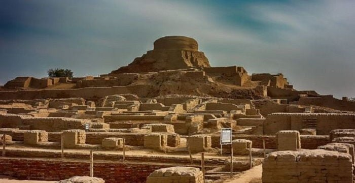

Indus Valley Civilization
The Indus Valley Civilization (3300–1300 BCE) was one of the earliest urban cultures in the world, with advanced city planning, drainage systems, and trade networks in cities like Harappa and Mohenjo-Daro. The Indus Valley Civilization (IVC), also known as the Harappan Civilization, was one of the world's earliest urban societies, flourishing in the northwestern regions of South Asia. It developed around the fertile plains of the Indus River and its tributaries, in what is now modern-day Pakistan and northwest India. The civilization was at its peak from about 2600 BCE to 1900 BCE and was known for its advanced city planning, architecture, and social organization. Major cities like Harappa, Mohenjo-daro, and Dholavira were well-planned with grid-patterned streets, well-constructed brick houses, drainage systems, public baths, granaries, and even marketplaces. One of the most famous structures, the Great Bath of Mohenjo-daro, shows the importance of cleanliness and ritual bathing in the society. Their drainage systems were remarkably advanced for their time and often better than those in many later civilizations. The Indus people were skilled artisans and traders. They created beautiful pottery, beads, seals, and metal tools. Their trade network extended to Mesopotamia, suggesting long-distance commerce. Although they used a form of script (called the Indus script), it has not been deciphered yet, which makes understanding their political structure and beliefs difficult. However, seals and figurines suggest they practiced some form of religion involving nature worship and animal symbolism. The decline of the Indus Valley Civilization is still a subject of debate. Possible reasons include climate change, drying of rivers, natural disasters, or invasions. Despite its mysterious end, the civilization left a lasting legacy on the Indian subcontinent. It set early examples of organized urban living and continues to fascinate historians, archaeologists, and researchers around the world.
Vedic Period

The Vedic Period (1500–500 BCE) saw the composition of the Vedas, which laid the foundation for
Hinduism,
social structures, and Indian philosophy.
"Let noble thoughts come to us from every side." – Rig
Veda
The Vedic Period is a significant era in ancient Indian history, named after the *Vedas*, the oldest
sacred texts of Hinduism. This period began around 1500 BCE, after the decline of the Indus Valley
Civilization, and is divided into two phases: the Early Vedic Period (1500–1000 BCE) and the Later Vedic
Period (1000–500 BCE).
During the Early Vedic Period, the Aryans, a group of Indo-Aryan-speaking people, settled in the
northwestern parts of the Indian subcontinent, particularly in the region of Punjab. They were primarily
pastoralists and gradually adopted agriculture. The *Rigveda*, the oldest of the four Vedas, was
composed in this time and contains hymns dedicated to natural forces and gods like Indra, Agni, Varuna,
and Surya. Society was organized into tribes and led by chiefs known as *rajas*. Social structure was
relatively simple, with people categorized into four *varnas*: Brahmins (priests), Kshatriyas
(warriors), Vaishyas (traders), and Shudras (laborers).
In the Later Vedic Period, the Aryans expanded eastward into the Gangetic plains. Agriculture became
more important, and permanent settlements grew into kingdoms or *mahajanapadas*. Society became more
complex, and the varna system turned into a rigid caste system. Rituals became more elaborate, and the
role of the Brahmins grew in importance. New religious ideas emerged, questioning ritualism and
promoting introspection. This period also saw the composition of the *Yajurveda*, *Samaveda*, and
*Atharvaveda*, along with the *Upanishads*, which explored deeper spiritual and philosophical concepts.
The Vedic Period laid the foundation of Indian culture, religion, and social systems. Its influence is
still seen in modern Hindu beliefs and practices. It marked the transition from a tribal, pastoral
society to an organized agrarian and spiritual civilization.
Maurya & Gupta Empires
The Maurya Empire under Ashoka spread Buddhism across Asia, while the Gupta Empire (320–550 CE) led to a golden age of science, mathematics, and art. The Maurya Empire (322 BCE – 185 BCE) was the first large-scale empire in ancient India, founded by Chandragupta Maurya with the help of his advisor Chanakya (Kautilya). The empire expanded rapidly and included a vast part of the Indian subcontinent. The capital was Pataliputra (modern-day Patna). Chandragupta established strong central administration, a well-organized bureaucracy, and a powerful army. His grandson, Emperor Ashoka, is one of the most famous rulers in Indian history. After the Kalinga War, Ashoka embraced Buddhism and promoted peace, non-violence, and moral governance. He built stupas and spread Buddhist teachings across Asia. The Mauryan Empire declined after Ashoka’s death and eventually collapsed by 185 BCE. The Gupta Empire (c. 320 CE – 550 CE), established by Chandragupta I, marked the beginning of a golden age in Indian history. His son Samudragupta expanded the empire through military conquests, and Chandragupta II (Vikramaditya) further enhanced the empire's glory through cultural and economic development. The Guptas ruled much of northern India, with their capital also at Pataliputra. The Gupta period is known for great advancements in science, mathematics, astronomy, literature, and art. Scholars like Aryabhata made significant contributions to mathematics and astronomy. The decimal system and the concept of zero were developed during this time. Sanskrit literature flourished, with works like Kalidasa’s plays and poems gaining popularity. The Ajanta and Ellora caves reflect the era’s artistic excellence. Religiously, Hinduism became dominant, but Buddhism and Jainism were also respected. The Gupta rulers practiced religious tolerance. While the Mauryas focused on centralized control and expansion, the Guptas promoted cultural revival and intellectual progress. Both empires played a vital role in shaping ancient Indian civilization and left lasting legacies in governance, culture, and philosophy.

Delhi Sultanate & Mughal Empire

Medieval India saw Islamic rule, including the Mughals (1526–1857), who enriched Indian culture with architecture like the Taj Mahal and Persian influences. The theory behind the **Mughal Empire's administration** centers on a highly **centralized and hierarchical system** designed to maintain effective control over a vast and diverse territory. The emperor held supreme authority, often justified by a divine right to rule, making him the central figure in both political and religious matters[5][6]. Key elements of the Mughal administrative theory include: - **Subdivision of the Empire:** The empire was divided into provinces called *subas*, each governed by a *subedar* (provincial governor) appointed by the emperor. These provinces were further divided into smaller units like *sarkars*, *parganas*, and villages, each with designated officials for local administration and revenue collection[1][2][6]. - **Military and Civil Integration:** The Mughal administration was based on the *mansabdari* system introduced by Akbar, a military-cum-bureaucratic ranking system where nobles held ranks (*mansabs*) that defined their military and civil responsibilities. This system linked revenue, military command, and administration, ensuring loyalty and efficient governance[3][7]. - **Revenue Collection:** Land revenue was the primary source of income, managed through systems like *zabt* (assessment based on crop production) and stringent tax collection methods involving local officials. The finance minister (*diwan*) supervised revenue and expenditures centrally[3][5][6]. - **Centralized Bureaucracy with Provincial Autonomy:** While the emperor had absolute control, provincial governors had administrative, civil, and military duties under the emperor's supervision but were required to implement central policies consistently. There were overlapping jurisdictions, but regular reporting ensured a connected administrative network[1][2][6][7]. - **Key Officials:** The administration had various high officials such as the *diwan* (finance minister), *mir bakshi* (military affairs), *sadr* (chief religious judge), and *khan-i-saman* (head of royal household and stores), each with specialized roles to maintain state functions[6]. Thus, the Mughal administrative theory emphasized **centralized authority, military integration in governance, land revenue as the backbone of finance, hierarchical subdivisions**, and a bureaucratic system that balanced local administrative needs with imperial control. This framework enabled the Mughals to govern a large, culturally diverse empire efficiently for two centuries[3][6][7].
Colonial Period & Independence
"Be the change you wish to see in the world." –Mahatma Gandhi
The Colonial Period in India, primarily marked by British rule, began effectively after the Battle of
Plassey in 1757 when the British East India Company secured political control over Bengal. Through
subsequent military victories and strategic alliances, the Company expanded its rule, taking advantage
of the political fragmentation caused by the decline of the Mughal Empire. The Company’s dominance was
solidified after the Battle of Buxar (1764), followed by policies like the Subsidiary Alliance and
Doctrine of Lapse, which incorporated many Indian territories under British control.
The widespread Indian Rebellion of 1857 marked a turning point. The British Crown formally took over
administration from the Company in 1858, initiating the period of direct British rule known as the
British Raj. Queen Victoria was proclaimed Empress of India in 1877. During this era, infrastructure
expanded—such as railways and telegraphs—and a new administrative system was introduced. However,
economic policies prioritized British interests, severely impacting traditional industries and leading
to famines and poverty in the population.
Political awakening grew in the late 19th and early 20th centuries. The Indian National Congress was
formed in 1885, becoming a major platform for expressing Indian grievances and demands for self-rule.
Key incidents, such as the Partition of Bengal (1905), the Jallianwala Bagh Massacre (1919), and
repressive acts by the British, fueled mass nationalist movements.
Mahatma Gandhi emerged as a central leader, promoting non-violent resistance through movements such as
the Non-Cooperation (1920), Civil Disobedience (1930), and Quit India (1942) movements. These were
supported by a growing consciousness among various sections of Indian society, including both Hindus and
Muslims, though communal divisions began to deepen.
After World War II, weakened British authority and relentless Indian demands for independence led to
negotiations for withdrawal. In 1947, the British Raj ended with the partition of British India into the
independent dominions of India and Pakistan. This transformation marked both the culmination of colonial
exploitation and the rise of two sovereign nations, free to chart their own paths.

Republic of India

India became a republic on 26 January 1950. Today, it is a democratic, diverse, and rapidly developing nation with global influence in technology, culture, and economy.**Republic of India 1950 – Present** The Republic of India was officially established on 26 January 1950 with the adoption and enforcement of its Constitution, which marked India’s transition from a British dominion to a sovereign, democratic republic. Although India gained independence on 15 August 1947, it became a republic only after the Constitution came into force, replacing the Government of India Act 1935 as the country's governing document. On this day, Dr. Rajendra Prasad took oath as the first President of India, signifying the start of an elected and parliamentary system of government. The core features of the Republic of India include: A sovereign, socialist, secular, and democratic republic governed by a written Constitution A parliamentary system with real executive power vested in the Council of Ministers headed by the Prime Minister, while the President is the formal head of state Fundamental rights and duties granted to all citizens under the Constitution 26 January is celebrated every year as Republic Day, marking the empowerment of Indian citizens to choose their own government and the beginning of full democracy in India